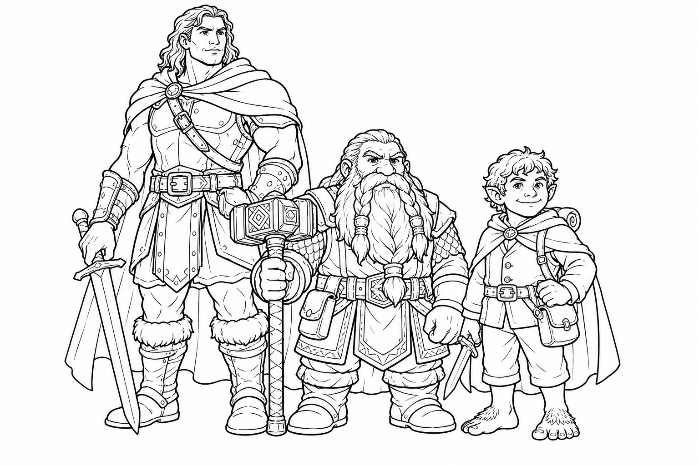

Massive, incredibly strong people who live on the highest mountain peaks!
If you want to play a character who is taller than everyone else, loves a good challenge, and can lift boulders like they are pebbles, the Goliath is for you!

Goliaths are super competitive, but they also believe in playing fair. To a Goliath, life is one big game or sport! They love wrestling, racing, and seeing who can climb a mountain the fastest. They don't care much about fancy clothes or gold; they care about what you can do. If you can help the team and pull your own weight, a Goliath will be your best friend.
Goliaths are distant relatives of Giants! They live in nomadic tribes high up in the freezing mountains where the air is thin and the wind howls. Because life in the mountains is so tough, Goliaths learn to be strong from a very young age. They travel from peak to peak, hunting giant beasts and surviving where no one else can.
Most Goliaths are Lawful Neutral. This means they really care about rules, especially the rules of their tribe and the rules of a fair game. They believe everyone has a job to do, and as long as you do your job and don't cheat, you're okay in their book!
Goliaths judge people by how useful they are, not by how they look!
You are related to Giants! You can choose a giant type (like Stone, Fire, or Cloud) to get a special magic power. For example, you might be able to turn your skin to stone to block damage, or teleport short distances like a Cloud Giant!
You are super strong! Even though you are technically a "Medium" sized creature, you count as one size larger (Large) when determining how much weight you can carry, push, or drag. Need to move a wagon? No problem!
You are used to the freezing cold and the high altitudes. You don't get bothered by freezing weather, and you can breathe perfectly fine at the very top of the highest mountains.